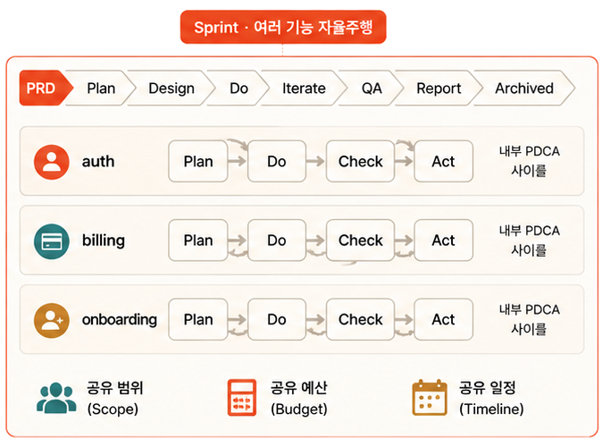

Sprint 개념 ① — PDCA → Sprint 진화

PDCA가 Sprint 스킬로 진화
— 여러 기능을
하나의 컨테이너로 묶어 함께 관리
. 각 기능은 그 안에서 그대로 PDCA로 돈다.
Pre-플래닝 ‘PRD’ 추가
— 코드 짜기 전에 왜 · 누구를 위해(문제·타깃·성공지표)를 먼저 못박는다.
무인일수록 기획이 단단해야
흔들리지 않는다.
Trust L0~L4
— ‘어디까지 사람 없이 갈지’ 정하는
다이얼
(L0 수동 → L4 완전자율)
.